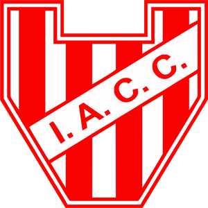

INSTITUTO
Cordoba - Cordoba Capital
Soy Instituto de cordoba, ascendi a primera en 2022,
gane la primera nacional 2 veces, 9 trofeos de la liga cordobesa
y cuatro en la segunda division cordobesa. Naci el 8 de agosto
de 1918 los trabajadores del ya extinto Ferrocarril Central Córdoba,
que fue una empresa de capitales británicos,
deciden establecer un club cuyo propósito era fomentar la práctica deportiva.